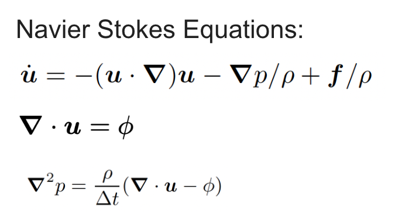
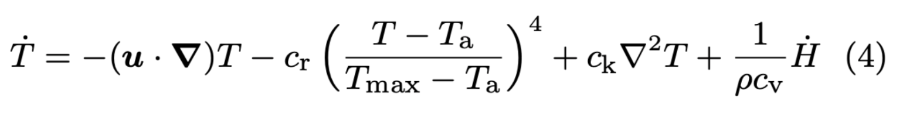
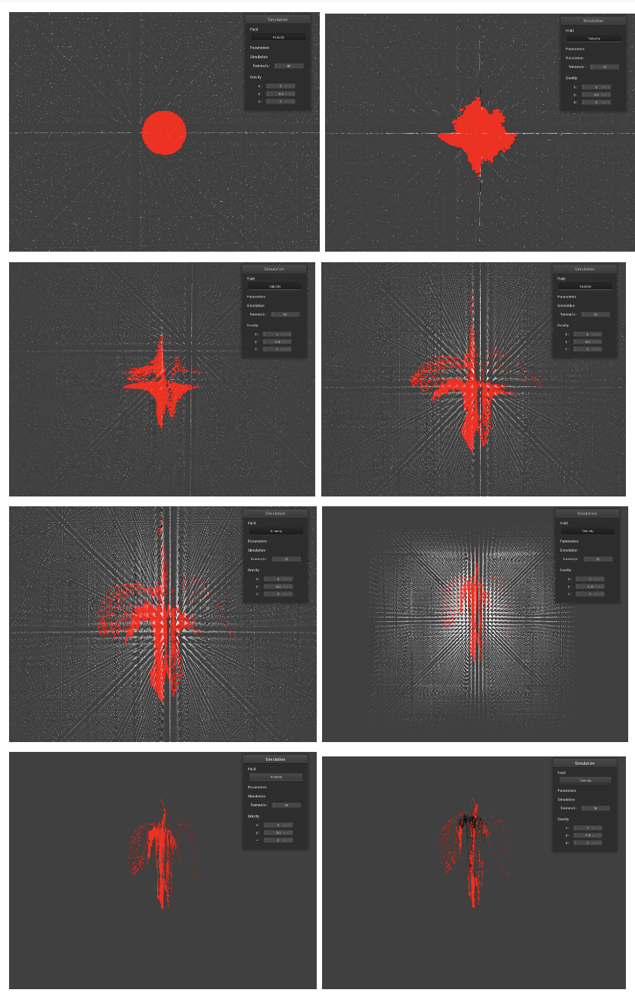
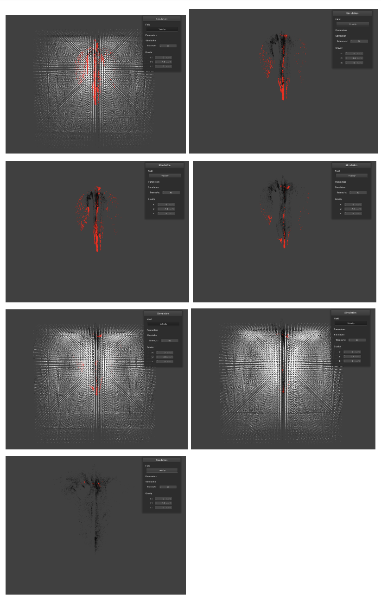

3D Explosion Simulator
Group 53: Eric Barrett (184), Angela Liu (184), Adam Rashid (184), Jenny Wang (184)
3D Explosion
Simulator
Abstract
In this project, we implemented a 3D particle explosion simulator from scratch using only the existing simulation foundation from Project 4: Clothsim. Our goal for the explosion simulator was to mimic real particle physics as closely as possible in order to create genuine 3D explosion effects. We modeled our simulation world as two components: a 3D grid field representing air and a set of free moving particle masses representing the burning fuel. The particles are simply spherical masses at a given 3D position. The 3D grid field is a volume divided into cells, each containing a changing velocity, temperature, pressure, heat transfer, and force attribute which are evolved at each timestep based on interaction with neighboring grid cells. These rules were derived from the Navier-Stokes equations for fluid dynamics and implemented with various numerical solvers. This served as the backdrop for our particle simulation since each particle that made up the overall explosion was mapped to a cell location and experienced forces dependent on its associated cell state (in addition to normal forces like gravity, buoyancy, and air drag effects). To enhance the effects of the simulation, once the initial fuel particles reach a certain temperature, they begin burning and generating new particle masses representing soot. These are rendered as black particles which behave largely the same as fuel particles, but with different parameters.
Final Project Video
Technical Approach
Particle Simulation
The particle simulation was implemented very similarly to ClothSim. Each particle gets an updated position, velocity, and temperature value based on the forces and heat transfer applied to the particle. This is done using simple Euler integration.
Grid Field Cell Creation
To implement the underlying grid field environment, we created a list of FieldCell objects which each contained the following attributes:
- Pressure: the fluid pressure in the cell
- Velocity: the speed and direction of fluid motion in the cell
- Temperature: the current cell temperature
- Phi: A constraint to control divergence in the velocity field [3]
- Force: stores the sum total of forces exerted on the cell (buoyancy, vorticity, etc.)
- Heat Transfer: Amount of heat transfer entering or exiting the cell
- isBoundary: bookkeeping field for edge case boundary cells
Each of these attributes of a field cell (disregarding the isBoundary boolean) were updated at each timestep based on neighboring attributes to create a smooth updating vector field that simulated the underlying pressures and forces that would carry rendered particles during the explosion.
Grid Field Updates
To update the grid field cells, we followed a sequence of steps derived from the Navier Stokes Equations which explain the motions of fluid simulation.
The methods we used to implement these equations were based off of the methods described in [2], but we chose to implement them in 3D rather than a simple 2D grid. Each step of the update can be broken down into the following components based on the fluid flow diagram provided in [5].
Adding Grid Cell Velocity and Pressure Update
To update the velocity at a particular cell, we implemented in code the following equation for velocity update [3].
The last term of the velocity update simply required determining the sum of forces being applied to each air cell, divided by the cell density to get the change in velocity for the particular acceleration in the time step. This was done before anything else in a simple eulerian fashion.
The first term represents velocity advection which we implemented using a semi-Lagrangian method based on the description and pseudocode of 2D advection provided in [2]. The semi-Lagrangian approximation was implemented by simply backtracking the velocity of each cell to a new 3D position, then interpolating the velocity of the 8 cells that surround that point.
To implement the second term, we performed a pressure update step which served to determine the updated pressure from divergence. The pressure update is derived from the following equation from [2]:
Notice that this is where we use the phi constraint from each cell. Since this uses the divergence on the right hand side, we began by first calculating the divergence, which is defined by the dot product of the gradient with velocity to implement the following equation from [1].
Now that we have the divergence, to solve the pressure equation we use the fact that it is a Poisson equation of the form [6]:

This can be solved using the Gauss Seidel (or Eulerian Relaxation) method over 20 iterations. This is done by repeatedly calculating new pressure values from the previous iterations pressure value using a 3D version of this formula [6]:
The 3D version of this formula uses the sum of six neighbors and a division by 6 instead of 4. This resulted in pressure values for each cell. Finally, to implement the second term of the velocity update equation, we subtracted the gradient of the pressure from the velocity.
Adding Grid Cell Temperature Update
To update the cell temperature at every timestep, we follow the fluid temperature update equation [3]:
The first term represents the advection of the fluid which we calculated using the semi-Lagrangian method identical to velocity advection implemented earlier, except acting upon the Temperature attribute of each cell. The second term incorporates the effects of cooling over time as the grid cell interacts with the ambient environment (Ta). We found that a cooling constant of 0.0001 worked well in practice. The third term represents the temperature diffusion. Finally, the last term applies heat to the cell by using the heat_transfer amount in the cell and dividing by the cell density and our chosen heat transfer constant of 1 to get the amount of heat entering (or exiting) the cell at each new update. Similar to the force term for the velocity update, the second and fourth terms are implemented by simply adding to the temperature in Eulerian fashion.
We implemented temperature diffusion using a diffusion coefficient of 5 and approximated the second-degree gradient of the temperature using the Laplacian equation implemented via the Gauss-Seidel method of approximation over 20 iterations. At each iteration, we compute the amount of diffused temperature between a cell and its neighbors by summing its current temperature with a fractional amount of the sum of its 6 neighbors and averaging this weighted value to get the temperature update.
Initial Conditions and Detonation by Adding Initial Non-zero Divergence
The initial conditions of the explosion are created by generating a large number of fuel particles inside a uniform sphere. These particles are initialized to the ambient temperature.
To implement the actual detonation explosion, we needed to create a non-incompressible fluid to begin with in order to force an outward divergence/movement of particles. As a result, instead of setting the divergence to 0 as was done to render the soot particles at the end of the simulation, we began by setting the divergence constraint Phi for each grid cell which followed a spike to a max value followed by a decaying schedule that gradually dampened down the amount of divergence allowed as the explosion matured. The conceptual reasoning behind this was detailed in [3] with the following two equations.
Our implementation of this effect consisted of setting the Phi constraint of each grid cell inside the explosion radius. The curve for Phi we chose peaks at around 300 for the center of the explosion and decayed exponentially by a factor of 2 to the power of negative.
Adding Vorticity Confinement
We implemented vorticity confinement by following the conceptual equations for vorticity defined in [1]. We first implemented our calculation for vorticity by taking the cross product of the gradient and velocity, which we approximated in the discrete form via the following reference equations:
After calculating the vorticity, we found the normal vorticity field by calculating the approximated gradient over the discrete field of vorticity norms (implemented simply by taking the difference in adjacent vorticity norms divided by the delta), and then used this value to calculate the confinement force which enacts on each particle following the equation in [3]:
We found that a constant of 0.1 for epsilon worked well for us (note that h here is simply the discretization constant, 1/cell_size).
Problems Encountered
Grid field indexing errors: Since we were augmenting a 2D description of grid fields in most papers to a 3D one for our own implementation, there were a lot of indexing errors that occurred for almost the entire duration of working on the project. A very common one was forgetting the additional edge dimensions of each width/height/depth (since we used each dim length + 2 to account for 2 edge lengths at each end of every dimension of the grid cube). Additionally, there were also other errors with increasing the dimension size where we had discussions on whether we needed to divide by a new constant for averaging or modify our coefficients in some way to accommodate the extra dimension factor. For the most part, tackling these issues required a lot of staring at code line by line and using a debugger to step through and ensure that each value we received was valid and expected given our grid dimension space.
Strange grid field behaviors (diverging, oscillating back and forth, etc.): These issues were a pain to debug because there was no error in the code compilation or runtime and we had to in many cases use print statements just to see how and where the diverging or oscillating values were occurring. Most of the underlying issues were caused by indexing errors in the dimensions of our grid field and tackling these problems were particularly difficult since it was often hard to distinguish whether it was an implementation mistake in the equation or some other issue. As before, we tackled these issues by closely reviewing the purpose of each lines of our code with the reference equations provided in the research papers and even cross-checked different conceptual implementations from various papers to determine if the diverging effect could be resolved using a different method. As an example, we ended up finding the reference [2] particularly helpful since it provided a divergence-free update to the cell velocity that resolved a lot of divergence problems found in the previous paper [4]. Once, resorting to rewriting a whole function from scratch resolved a mysterious issue.
Particle Rendering: We began this project by rendering 1,000 spheres to serve as “particles” in our explosion. However, we soon noticed that it was impossible to create a realistic looking rendering with only 1,000 explosion pieces in addition to rendering the shape of each sphere and calculating the updates of everything in the process. As a result, we have scaled down our rendering to only show dot points rather than 3D spheres, with red points representing hot explosive gas particles while black points represent soot particles that are generated as a byproduct of the explosion when the gas particles cool down.
Lessons Learned
Always use the helper functions because reimplementing code might lead to similar bugs. For example, one oddity of our code was that the grid was of size (width+2)*(height+2) to account for borders. For the longest time, our divergence calculation code indexed into the array with width and height instead of their bordered equivalents even though the bug was fixed in our IDX helper function.
Debuggers are useful for pinpointing sources of error. IDEs that support debuggers are good.
Honestly, a lot of physics! We learned a lot about all the different forces acting on the air and particles.
Results
The vector field only
Final result: Particles only
 References
[1] Fedkiw, et al. “Visual Simulation of Smoke”. https://web.stanford.edu/class/cs237d/smoke.pdf
[2] Stam. “Real-Time Fluid Dynamics for Games”. http://graphics.cs.cmu.edu/nsp/course/15-464/Fall09/papers/StamFluidforGames.pdf
[3] Feldman. “Animating Suspended Particle Explosions”. http://graphics.berkeley.edu/papers/Feldman-ASP-2003-08/Feldman-ASP-2003-08.pdf
[4] Stam. “Stable Fluids”. https://d2f99xq7vri1nk.cloudfront.net/legacy_app_files/pdf/ns.pdf
[5] Lu, et al. “Particle Explosions”. http://donkilu.github.io/Explosion/
[6] https://en.wikipedia.org/wiki/Relaxation_(iterative_method)
[7] Walker, “Colour Rendering of Spectra” https://www.fourmilab.ch/documents/specrend/
Contributions from Each Team Member
Angela: I worked on some of the initial grid field setup by implementing the 3D versions of project and diffuse, based on the reference in [2]. In addition, I worked with Eric on determining how to implement each step of vorticity confinement from calculating the vorticity with the cross product to creating the eventual confinement force vector. I also helped to debug a lot of one-off indexing errors in for loops when creating the initial 3D grid design and out of bounds/null pointer program crashes.
Jenny: I helped debug indexing errors and the diverging values in the simulator. I also helped parse out the reference materials when we were researching past work in the field. At the very end, I formatted this website and took a template from W3Schools.
Adam: I edited the clothsim code to render an empty scene without a cloth object and create 1,000 particles that initiated at random start velocities for the initial explosion effect. I also worked with Angela to set up implementation of the initial grid field by implementing the advect, project, and diffuse functions based on the papers. Eric and I implemented and debugged the creation of explosion by including the changing pressure in the field. Finally, I also started implementing another version of the gas field with arrays rather than cell structs but we ended up getting gas cells to work so I never finished the array field.
Eric: After working with the whole team, and particularly Adam, to get a conceptual understanding of the research our project is based on I worked modifying ClothSim to display the particles as 3D spheres. Later, I changed the particle rendering to the current method which displays the particles as billboard quads. I also worked on a lot of the core simulation code. Angela and I worked on implementing vorticity confinement and thermal buoyancy. Adam and I spent a lot of time trying to ensure that we successfully translate the research into 3D. A lot of this was debugging and tuning parameters to achieve a stable simulation.
Explosions!